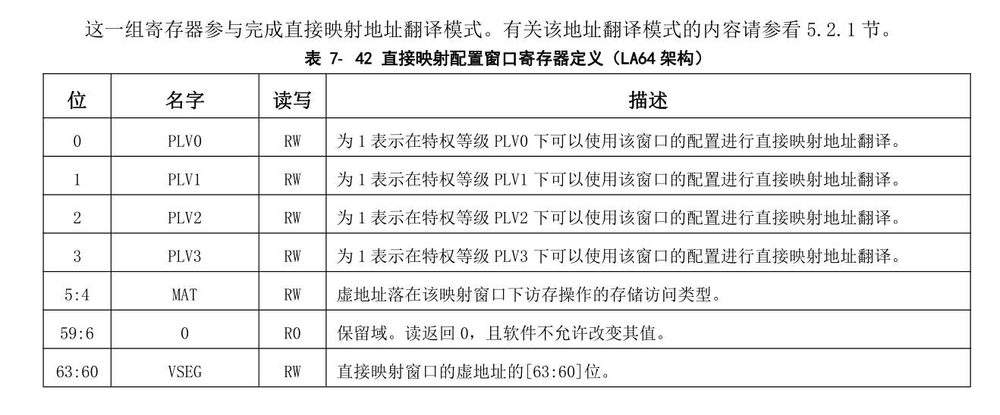

存储管理
loongarch管理的内存物理地址空间范围是：\(0-2^{PALEN-1}\)。在 LA32 架构下，PALEN 理论上是一个不超过 36 的正整数，由实现决定其具体的值，通常建议为 32。在 LA64 架构下，PALEN 理论上是一个不超过 60 的正整数，由实现决定其具体的值。系统软件可以通过 CPUCFG 读取配置字 0x1 的 PALEN 域来确定 PALEN 的具体值。
loongarch架构中虚拟地址空间是线性平整的。对于 PLV0 级来说，LA32 架构下虚拟地址空间大小为 \(2^{32}\)字节，LA64 架构下虚拟地址空间大小为 \(2^{64}\)字节。不过对于 LA64 架构来说， \(2^{64}\)字节大小的虚拟地址空间并不都是合法的，可以认为存在一些虚拟地址的空洞。合法的虚拟地址空间与地址映射模式紧密相关。并且对于应用程序来说，在 LA32 架构下，应用软件能够访问的内存地址空间范围是：\(0-2^{31}-1\),在 LA64 架构下，应用软件能够访问的内存地址空间范围是：\(0-2^{VALEN}-1\)。这里 VALEN 理论上是一个小于 等于 64 的整数，由实现决定其具体的值,应用软件可以通过执行 CPUCFG指令读取 0x1 号配置字的 VALEN 域来确定 VALEN 的具体值.
loongarch的MMU 支持两种虚实地址翻译模式：直接地址翻译模式和映射地址翻译模式
当 CSR.CRMD 的 DA=1 且 PG=0 时，处理器核的 MMU 处于直接地址翻译模式。在这种映射模式下，物理地 址默认直接等于虚拟地址的[PALEN-1:0]位（不足补 0），除非具体实现中采用了其它优先级更高的虚实地址 翻译规则。可以看到此时整个虚拟地址空间都是合法的。处理器复位结束后将进入直接地址翻译模式。当 CSR.CRMD 的 DA=0 且 PG=1 时，处理器核的 MMU 处于映射地址翻译模式。具体又分为直接映射地址翻译模式（简称“直接映射模式”）和页表映射地址翻译模式（简称“页表映射模式”）两种。翻译地址时将优先看其能否按照直接映射模式进行翻译，无法进行后再按照页表映射模式进行翻译.
loongarch架构下支持三种存储访问类型，分别是：一致可缓存（Coherent Cached，简称 CC）、强序非缓存（Strongly-ordered UnCached，简称 SUC）和弱序非缓存（Weakly-ordered UnCached，简称 WUC）。当处理器核 MMU 处于直接地址翻译模式时，所有取指的存储访问类型由 CSR.CRMD.DATF 决定，所有load/store 操作的存储访问类型由 CSR.CRMD.DATM 域决定。当处理器核 MMU 处于映射地址翻译模式时，存储访问类型的确定分为两种情况。如果取指或 load/store操作的地址落在某个直接映射配置窗口上，那么该取指或 load/store 操作的存储访问类型由配置该窗口的CSR 寄存器中的 MAT 域决定。如果取指或 load/store 只能通过页表完成映射，那么其存储访问类型由页表项中的 MAT 域决定.无论在哪种情况下，存储访问类型控制值的定义是相同的，均是：
0——强序非缓存，1——一致可缓存，2——弱序非缓存，3——保留。
直接映射地址翻译模式
当处理器核的 MMU 处于映射地址模式时，还可以通过直接映射配置窗口机制完成虚实地址的直接映射。直接映射配置窗口共设置有四个，前两个窗口可同时用于取指和 load/store 操作，后两个窗口仅用于load/store 操作。系统软件通过配置 CSR.DMW0~CSR.DMW3 寄存器来分别设置四个直接映射配置窗口。每个窗口除了地址范围信息外，还可以配置该窗口在哪些特权等级下可用，以及虚地址落在该窗口上的访存操作的存储访问类型。

在 LA64 架构下，每一个直接映射配置窗口可以配置一个 \(2^{PALEN}\)字节固定大小的虚拟地址空间。当虚地址命中某个有效的直接映射配置窗口时，其物理地址直接等于虚地址的[PALEN-1:0]位。命中的判断方式是：虚地址最高 4 位（[63:60]位）与配置窗口寄存器中的 VSEG 域相等，且当前特权等级在该配置窗口中被允许。
举例来说，在 PALEN 等于 48 的情况下，通过将 DMW0 配置为 0x9000000000000011，那么在 PLV0 级下，0x9000000000000000 ~ 0x9000FFFFFFFFFFFF 这段原本在页映射模式下不合法的虚地址空间，将被映射到物理地址空间 0x0 ~ 0xFFFFFFFFFFFF 上，且存储访问类型是一致可缓存的。
页表映射存储管理
映射地址翻译模式下，除了落在直接映射配置窗口中的地址之外，其余所有合法地址都必须通过页表映射完成虚实地址转换。TLB 作为处理器中存放操作系统页表信息的一个临时缓存，用于加速映射地址翻译模式下的取指和 load/store 操作的虚实地址转换过程。
关于页表的内容在下一小节将着重介绍。